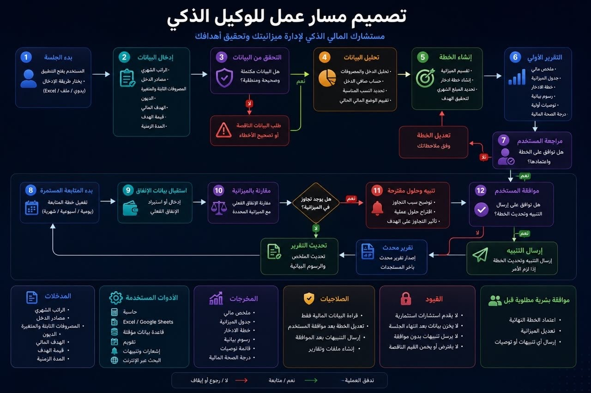
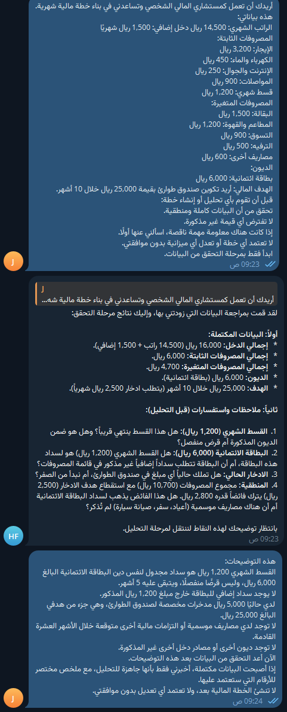
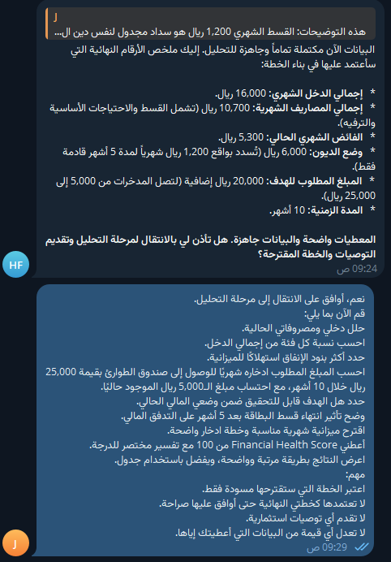
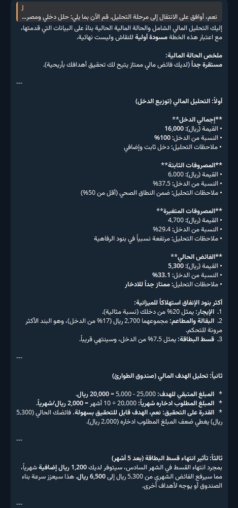
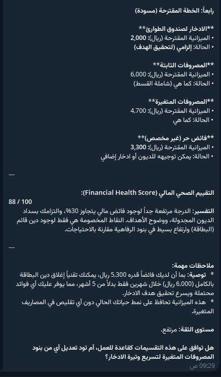
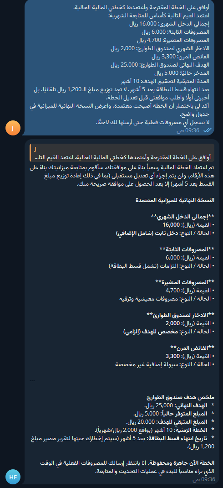
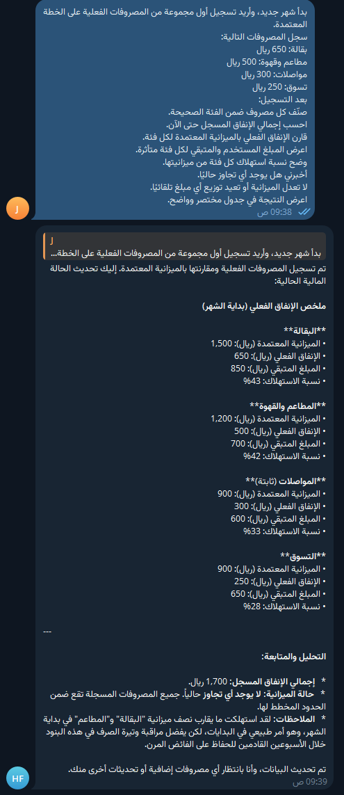
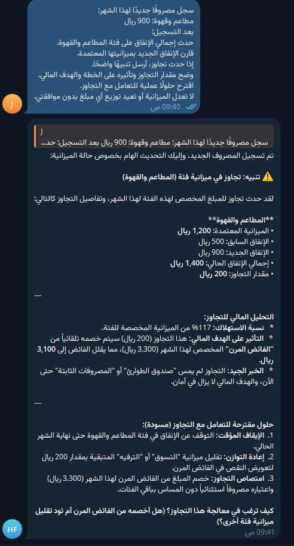
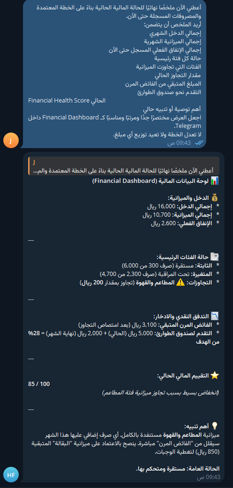

A visual walkthrough of the agent workflow and the Telegram demo.
Hermes Agent Local LLM TelegramFull workflow of the financial advisor agent.

The agent checks the data first and asks for missing details instead of assuming values.

The agent confirms the key numbers and waits for approval before continuing.

Income, expenses, surplus, goal feasibility, and cash-flow impact are analyzed.

The agent generates a draft plan and financial health assessment.

The plan becomes active only after explicit user approval.

Real expenses are categorized and compared with the approved budget.

The agent detects the budget overrun and explains its impact before suggesting actions.

A final compact dashboard summarizes current financial status and score.
